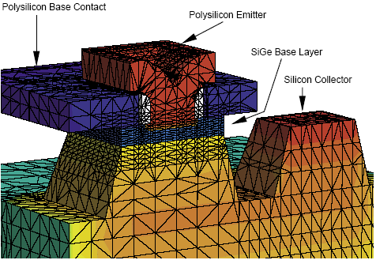

main menu
| module menu
| << previous section
| next section >>
main menu
| module menu
| << previous section
| next section >>
Tool Overview
2. TCAD Tools
2.1 Sentaurus Workbench
2.2 Sentaurus Process
2.3 Sentaurus Topography 3D
2.4 Sentaurus Structure Editor
2.5 Sentaurus Mesh
2.6 Sentaurus Device
2.7 Sentaurus Device Electromagnetic Wave Solver
2.8 Sentaurus Interconnect
2.9 Sentaurus Visual
2.10 Sentaurus Data Explorer
2.11 Calibration Kit
2.12 Garand
Objectives
- To present an overview of the TCAD Sentaurus tool suite.
2.1 Sentaurus Workbench
Sentaurus Workbench is the graphical front end that integrates Sentaurus simulation tools into one environment. Its user interface is used to design, organize, and run simulations for semiconductor research and manufacturing. Simulations are comprehensively organized into projects.
A simulation flow typically consists of several tools, such as the process simulator Sentaurus Process, the meshing tool Sentaurus Mesh, the device simulator Sentaurus Device, and the plotting and analysis tool Sentaurus Visual.
Sentaurus Workbench automatically manages the information flow from one tool to another. This includes preprocessing user input files, parameterizing projects, setting up and executing tool instances, and visualizing the results.
Sentaurus Workbench allows you to define parameters and variables to run comprehensive parametric analyses. The use of mathematical and logical expressions serves to preprocess the simulation input dynamically. The resulting data can be used with statistical and spreadsheet applications.
See the Sentaurus Workbench module.
{kind=link}
Figure 1. User interface of Sentaurus Workbench with a loaded project. The left pane shows the projects browser; the tool flow of the loaded project is shown on the Project tab; and the parameter definitions of different experiments are shown under the tool row. (Click image for full-size view.)
2.2 Sentaurus Process
Sentaurus Process is a comprehensive and highly flexible multidimensional process modeling environment. Calibrated to a wide range of the latest experimental data using proven calibration methodology, Sentaurus Process offers unique predictive capabilities for modern silicon and nonsilicon technologies.
Sentaurus Process includes an interface to Sentaurus Structure Editor for 3D etching and deposition capabilities, a lattice mismatch model for simulating SiGe and strained silicon, Monte Carlo implantation, analytic implantation and damage models, and state-of-the-art diffusion models.
The Alagator scripting language used in Sentaurus Process allows you to develop new diffusion models quickly, making Sentaurus Process a very convenient tool for calibration purposes.
See the Sentaurus Process module.
Figure 2. Animated cross sections of a 90 nm NMOSFET during various stages of processing.
2.3 Sentaurus Topography 3D
Sentaurus Topography 3D is a three-dimensional (3D) simulator for evaluating and optimizing critical topography-processing steps such as etching and deposition.
The two-dimensional (2D) mode of Sentaurus Topography 3D makes the physical models available for 2D structures as well. Therefore, both 2D and 3D structures can be simulated with consistent results.
The main Sentaurus Topography 3D functionality for advanced etching and deposition modeling is supported by the Sentaurus Process and Sentaurus Interconnect tools. This integration enables users of Sentaurus Process and Sentaurus Interconnect to easily incorporate one or more etching and deposition process steps into their simulation flow without having to create a separate command file and simulation node for Sentaurus Topography 3D.
Moreover, advanced lithography processes can be simulated with Sentaurus Topography 3D by invoking Sentaurus Lithography commands from within Sentaurus Topography 3D.
See the Sentaurus Topography 3D module.
Figure 3. Animation showing surface evolution during RIE2 model etching. The surface plots are saved at different etching times (first available times after the specified interval). The values assumed by the ion reflection flux on the surface are plotted. The formation of microtrenches at the bottom of the trench sidewalls due to ion reflection is shown.
2.4 Sentaurus Structure Editor
Sentaurus Structure Editor is a 2D and 3D device editor, and 3D process emulator. It has three distinct operational modes: 2D structure editing, 3D structure editing, and 3D process emulation. Geometric and process emulation operations can be mixed freely.
From the user interface, 2D and 3D device models are created geometrically using 2D or 3D primitives such as rectangles, polygons, cuboids, cylinders, and spheres. Three-dimensional regions also can be created by extruding 2D objects or sweeping 2D objects along a path.
Sentaurus Structure Editor offers state-of-the-art visualization. Structures are displayed as they are created and powerful view filters make it possible to select only a subset of regions or make certain regions transparent.
Doping profiles and meshing strategies are defined interactively. Placements are visualized as semitransparent boxes for easy verification. All doping and meshing options of the mesh generation tool Sentaurus Mesh are supported.
The user interface features a command-line window, in which Sentaurus Structure Editor prints script commands corresponding to the user interface operations. Script commands also can be entered directly in the command-line window.
See the Sentaurus Structure Editor module.
{kind=link}
Figure 4. User interface of Sentaurus Structure Editor. (Click image for full-size view.)
2.5 Sentaurus Mesh
TCAD Sentaurus provides state-of-the-art approaches for the automatic generation of meshes.
Sentaurus Mesh is a modular Delaunay mesh generator of high-quality spatial discretization grids for complex 2D and 3D devices. It integrates the axis-aligned mesh generator and the tensor-product mesh generator.
Sentaurus Mesh creates meshes that can be used for the discretization methods used in process and device simulators. The meshes are adapted not only to the geometry, but also to the doping concentration to capture steep gradients.
See the Sentaurus Mesh module.

Figure 5. SiGe HBT with nitride spacers (gray). Oxide regions are not shown. The doping profiles are superimposed on the polysilicon and silicon areas. N-doped areas are red and p-doped areas are blue. The axis-aligned mesh is created with Sentaurus Mesh.
2.6 Sentaurus Device
Sentaurus Device simulates the electrical, thermal, and optical characteristics of semiconductor devices. It is the leading device simulator and handles 1D, 2D, and 3D geometries, mixed-mode circuit simulation with compact models, and numeric devices. It provides a comprehensive set of physical models that can be applied to all relevant semiconductor devices and operation conditions.
Sentaurus Device is used to evaluate and understand how a device works, to optimize devices, and to extract SPICE models and statistical data early in the development cycle. Applications of Sentaurus Device include:
- VDSM silicon, where Sentaurus Device has proven accuracy to well below 100-nm technology
- Silicon-on-insulator (SOI) devices, where Sentaurus Device is known for its robust convergence and accuracy
- Double-gate and FinFET devices, where quantum transport is a reality
- SiGe, thin-film transistors, and optoelectronics
- Heterojunction HEMTs and HBTs
- Power and RF semiconductor devices
See the Sentaurus Device module.
Figure 6. (Top) Animated evolution of the current density in an SOI MOSFET during exposure to radiation with a dose rate of 50 krad/s. The device is biased at Vgs = 0 V and Vds = 2 V. The radiation charges up traps, in particular, in the buried oxide (brown region at the bottom). This creates a leakage path along the silicon-buried oxide interface. Current densities range from < 10-5 Acm-3 (blue) to > 103 Acm-3 (red). (Bottom) Drain current as a function of time during the irradiation.
2.7 Sentaurus Device Electromagnetic Wave Solver
Sentaurus Device Electromagnetic Wave Solver is a simulation module for the numeric analysis of electromagnetic waves. It is a full-wave time-domain simulator based on the finite-difference time-domain method. It is typically used to simulate the electromagnetic wave propagation in solid media as a stand-alone tool and can be linked to the electrical device simulator by calculating the carrier generation inside a device, caused by external light illumination.
See the Sentaurus Device Electromagnetic Wave Solver module.
Figure 7. Animated evolution of an electromagnetic plane wave incident on a CMOS image sensor.
2.8 Sentaurus Interconnect
Sentaurus Interconnect is a highly flexible, multidimensional, IC interconnect reliability analysis environment. With its modern software architecture and extensive breadth of capabilities, Sentaurus Interconnect is a state-of-the-art simulation tool. It offers unique predictive capabilities for modern silicon and nonsilicon technologies such as analyzing the reliability of semiconductor interconnect structures.
In particular, Sentaurus Interconnect identifies hot spots in interconnect structures that are susceptible to void formation, debonding, and cracking due to physical phenomena such as stress and temperature excursions. These reliability concerns arise from both the manufacturing process and the circuit operation.
Several commands allow you to select physical models and parameters, grid strategies, and graphical output preferences if required. In addition, the Alagator scripting language allows you to describe and implement your own models as well as thermal, electrical, and mass transport analysis equations.
See the Sentaurus Interconnect module.
Figure 8. Animation showing the von Mises stresses and the current density in the interconnects of a 6T SRAM cell calculated using Sentaurus Interconnect.
2.9 Sentaurus Visual
Sentaurus Visual is an interactive tool for data visualization and postprocessing. It can be used to explore and analyze data, to produce informative 2D and 3D views, to create presentation-quality plots and animations, and to share results on the Web.
See the Sentaurus Visual module.

Figure 9. User interface of Sentaurus Visual showing the total current density distribution inside a 25 nm FinFET device. (Click image for full-size view.)
2.10 Sentaurus Data Explorer
Sentaurus Data Explorer is a tool for editing and converting files in TDR format, which is the standard file format for exchanging data between TCAD Sentaurus tools.
On the command line, you can use simple commands to convert files to different formats and to create new files by copying and modifying files. This is most convenient when converting many files at the same time, using a batch file or script, and then continuing to work with these files in other tools.
The batch mode allows you to use the full flexibility of the Tcl/Tk programming language to manipulate TDR file datasets.
See the Sentaurus Data Explorer module.
2.11 Calibration Kit
The Calibration Kit is a software package that extends the functionality of Sentaurus Workbench. It serves as a database browser (calibration libraries containing secondary ion mass spectroscopy (SIMS) data) and a simulation and project manager.
The Calibration Kit assists you to:
- Perform efficient calibration of the process simulators Sentaurus Process and Taurus™ TSUPREM-4™ in one dimension.
- Obtain a fast, accurate, and reliable method of evaluating and optimizing process conditions.
- Understand the sensitivity of processes to various control parameters.
It allows a predictive analysis of the influence of process equipment parameters on electrical device data and enables you to optimize equipment efficiently.
For more information, see the Calibration Kit User Guide.
{kind=link}
Figure 10. Four experiments visualized in Sentaurus Visual. Comparison between experimental data of implantation (SIMS) (red curves), analytic models (green curves in the two top plots), and Monte Carlo simulation (green curves in the two bottom plots). (Click image for full-size view.)
2.12 Garand
Garand is a TCAD device simulator that models the electrical characteristics of individual CMOS transistors. The base simulator is a finite-difference drift-diffusion simulator. Garand also uses the density gradient model of quantum corrections to account for quantum-mechanical confinement in a device structure.
The variability engine, Garand VE, has been developed primarily for modeling statistical variability. Variability sources associated with random discrete dopants, line edge roughness, polycrystallinity of gate materials, and interface-trapped charges can be activated and configured from the input file.
{kind=link}
Figure 11. Potential distribution in a FinFET example simulated by Garand VE, showing statistical variation from random discrete dopants and metal gate granularity. (Click image for full-size view.)
Garand MC is a Monte Carlo simulator for devices, with a three-dimensional, self-consistent, ensemble quantum-corrected Monte Carlo engine. It can simulate both electron and hole transport in various default calibrated materials.
Garand, Garand VE, and Garand MC are simulation tools in the TCAD to SPICE product family. They all use finite-difference tensor meshes. In order for a device structure including doping information generated by TCAD Sentaurus tools, such as Sentaurus Process, to be compatible with Garand, Garand VE, and Garand MC, tensor mesh conversion using Sentaurus Mesh is required. This is demonstrated in the Sentaurus Mesh module, Section 7.6 Tensor Mesh for Garand VE.
See the TCAD to SPICE module.
main menu | module menu | << previous section | next section >>
Copyright © 2022 Synopsys, Inc. All rights reserved.